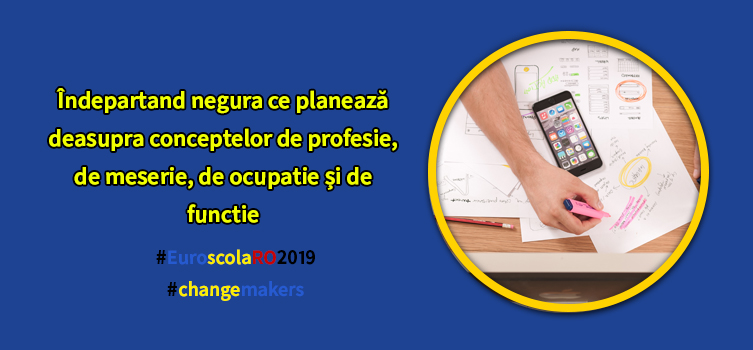

Indepartand negura ce planeaza deasupra conceptelor de profesie, de meserie, de ocupatie si de functie
-Completati, va rog, formularul! aud din dreptul functionarei. In mintea mea: Totusi, cred ca ma supraestimeaza. Ce sa scriu la “Profesie:”? O fi vreo diferenta intre profesie si meserie? Ocupatie sau functie?!
Află mai multe